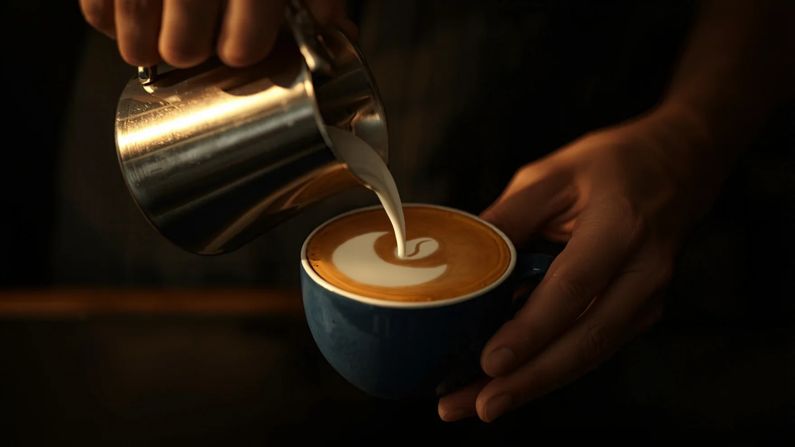
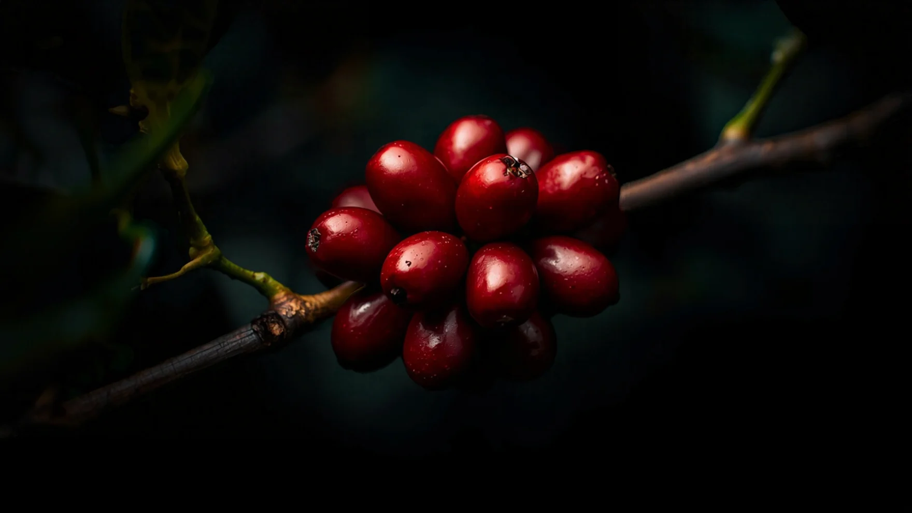
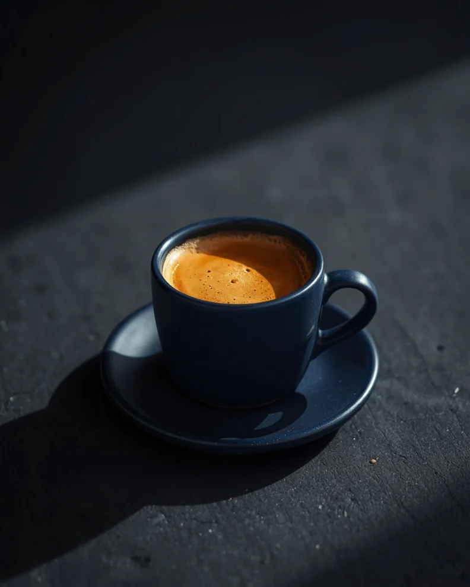
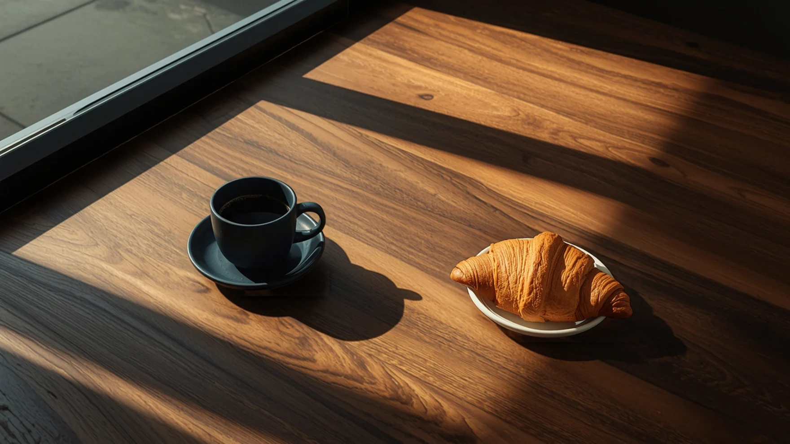

One lamp.
One long night.
Luna's began as a desk, a lamp and a cup that went cold too fast. We wanted a place that took coffee seriously and stayed open long enough to matter.
So we built a bar that pours until ten, a roaster that runs twice a week, and a kitchen that bakes before sunrise. Same craft at seven in the morning as at nine at night.

Picked ripe.
Bought direct.
We buy from three farms we know by name in Ethiopia, Colombia and Brazil, and pay well above fair trade for cherries picked at their peak.
Farm to cup,
slowly.
Sourced direct
Small lots from farms we visit, traced to the hillside they grew on.
Roasted twice a week
Tuesday and Friday, in small batches, rested before they reach the bar.
Poured to order
Weighed, timed and tasted. If a shot runs fast, it goes down the sink.




Said at the bar.
The Crescent Latte ruined every other latte for me.
Maya R. on GoogleBest flat white in Palm Beach County, and it isn't close.
Tom H. on GoogleI wrote half my thesis at the window seat. Worth every cup.
Lena K. on Yelp